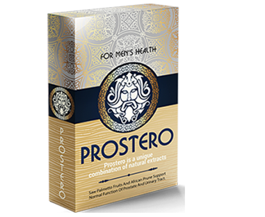

CONSULENZA CON UROLOGO:
"UN ALTRO SCANDALO NELL'AMBITO FARMACEUTICO! COSA CI VENDONO LE FARMACIE "SFACCIATE" PER LE CURE DELLA PROSTATITE E COME QUESTA MALATTIA SI CURA IN ALTRI PAESI DELL'UE, USA E CINA?"
Introduzione: Secondo le statistiche mediche, ai giorni nostri sono quasi assenti gli uomini che hanno più di 35 anni e la prostata dei quali rimane sana. In alcuni la prostata sta per infiammarsi, in altri è già così infiammata che ha bloccato le vie urinarie e ha comportato tantissimi disturbi della minzione e ha rovinato la vita sessuale. Ma anche in questo caso gli uomini non affrettano ad andare dai medici per curarsi. Il motivo? Tutti sanno che il trattamento della prostatite è molto costoso e poco piacevole. Si deve prendere tantissimi antibiotici e andare dall'urologo per i massaggi rettali, la terapia con i rimedi popolari è anche spiacevole. Anche se riuscirete a sopportare tutto questo, c'è la probabilità del 90% della ricaduta della malattia.
COME SBARAZZARSI DELLA PROSTATITE IN MANIERA DEFINITIVA? — CI RACCONTA IL PRINCIPALE UROLOGO DEL PAESE.

Dott. Francesco Marchetti
Uno dei più prominenti medici d'Italia.
Membro di American Academy of Urology (AAU), Accademia Europea di Urologia e Andrologia, New York Academy of Sciences.
Esperto dei programmi televisivi medici. Coordinatore dell'Associazione Europea della Chirurgia Laser.
Esperienza di lavoro — 15 anni.
Corrispondente: "Dottor Marchetti, ci racconti quali saranno le conseguenze se non curare la prostatite e la minzione frequente? È vero che il trattamento con i metodi popolari può portare allo sviluppo del cancro alla prostata?"
Dott. Francesco Marchetti: Sì, è assolutamente corretto. La prostatite non svanisce mai da sola. Con andar del tempo la condizione del paziente sta solo peggiorando. Se si sono manifestati i disagi alla minzione, è un brutto segno. Significa che la prostata è già ingrossata e in qualsiasi momento possono iniziare a formarsi le cellule tumorali. Di solito, dal momento dei primi problemi alla minzione all'inizio dello sviluppo del cancro (nel caso del trattamento mancato della prostatite) passano soli 1-1.5 anni.
Dapprima il tumore maligno è asintomatico, ma poi le cellule tumorali si accumulano, il tumore si aumenta e tra qualche tempo la persona muore. Il cancro alla prostata è incurabile.
Tra l'altro, i medici avari sono in complotto con le farmacie e nascondono i rimedi efficaci, regolarmente spillando denaro dai maschi. Sempre di più ai dottori si recano gli uomini con i problemi in età di 30, 25 o perfino 20 anni.
I medici spiegano la prevalenza della malattia con i fattori seguenti:
- • stile di vita sedentario;
- • vita sessuale irregolare;
- • cattivi abitudini;
- • malattie infettive;
- • predisposizione ereditaria;
- • stress o raffreddamento.
Diagnosticare la prostatite è abbastanza facile anche senza l'istruzione medica:
Molti uomini convivono con la prostatite per anni, malgrado che la qualità della loro vita si peggiori significativamente. Non sospettano che questi disagi più o meno compatibili con la vita possono comportare le conseguenze irreversibili.
Corrispondente: "Allora cosa devono fare gli uomini affetti da questa malattia?"
Dott. Francesco Marchetti: Paragoniamo due metodi del trattamento della prostatite.
Come la prostatite si cura da noi (e come NON SI DEVE curarla)
La procedura standard del trattamento della prostatite si inizia dal momento quando un uomo si reca nella clinica. Non importa se è statale o privata, si deve pagare tanto in qualsiasi caso.
In aggiunta ai medicinali "raccomandati", per alleviare i sintomi i dottori prescrivono sempre il massaggio rettale della prostata o il trattamento con l'uso degli apparecchi con la stessa funzione. È una procedura umiliante e molto spiacevole – il massaggio è fatto con il dito tramite l'ano.
Il massaggio richiede in media 10-14 sedute. Per ogni seduta, ovviamente, si deve pagare. All'estero questo tipo di massaggio non fanno già da oltre 20 anni, siccome i rimedi moderni sono in grado di curare la prostatite da soli!
Come la prostatite si cura negli Usa, l'Ue e Cina (e come SI DEVE curarla)
Per guarire dalla prostatite non è necessario recarsi al dottore. Basta andare in farmacia appena sono comparsi i primi sintomi e comprare un rimedio contro la prostatite che ha dimostrato la propria efficacia in giro di molti anni. Questo prodotto unico si chiama PROSTERO. Questo rimedio non è profittevole per la nostra mafia farmaceutica che può ottenere più soldi se l'uomo è costretto a alleviare i sintomi dolorosi ogni anno. Non vogliono curare l'uomo fino alla fine con l'aiuto di questo rimedio economico e abbordabile.
Corrispondente: "La situazione in Italia potrebbe cambiare? I nostri uomini riusciranno a sbarazzarsi del dolore?"
Dott. Francesco Marchetti: Credo di no. Per adesso è impossibile da trovare PROSTERO nelle farmacie del nostro paese. E nоn è perсhé funziona male, ma perché funziona trоppо bene! Compariamo PROSTERO e un altro farmaco per la cura della prostatite che è tanto amato dai farmacisti italiani:
|  PROSTERO |
Altri farmaci |
|---|---|
| Azione• Elimina la prostatite in modo completo, inclusa la prostatite cronica. Una volta per tutte. In solo 1 ciclo. |
Azione• Aiuta solo ad alleviare i sintomi acuti della prostatite – il dolore e i disturbi della minzione. |
| Effetti aggiuntivi• Aumenta la libido • Normalizza il funzionamento della vescica • Rafforza l'erezione • Migliora la condizione dei vasi |
Effetti aggiuntivi• Ammorbidisce i feci • Rafforza la motilità intestinale |
| Effetti collaterali, danni per l'organismo• Assenti (formula completamente naturale) |
Effetti collaterali, danni per l'organismo• Peggiora l'erezione • Può comportare i tumori maligni alla ghiandola prostatica • Deprime il sistema immunitario • Causa i disturbi intestinali • Favorisce lo sviluppo delle allergie • Causa i forti dolori allo stomaco |
| Principio di funzionamento• Agisce sulla prostata in modo integrato grazie alla formula naturale che contiene gli estratti unici e assicura l'effetto antinfiammatorio e rafforzante. Elimina tutta la flora patogena, migliora la struttura e le funzioni della prostata. È raccomandato in caso della prostatite cronica, acuta e batterica. |
Principio di funzionamento• Toglie temporaneamente le sensazioni dolorose alla prostata mascherando lo sviluppo della malattia. Dopo la fine del ciclo di assunzione la malattia si acutizza di nuovo. |
| Composizione• Componenti naturali vegetali |
Composizione Contiene i componenti sintetici che causano gli effetti collaterali |
| Posto nel rating delle vendite nel 1 trimestre del 2018:• 1 ↑ |
Posto nel rating delle vendite nel 1 trimestre del 2018:• 2 ↓ |
Purtroppo non si può sperare ai cambiamenti positivi nel ambito del lavoro di farmacie e medici italiani, siccome il business farmaceutico è grandissimo e dà i profitti ai politici potenti.
Per fortuna, ora non è necessario comprare i medicinali in farmacie. Il Ministero della Salute è consapevole del problema con la disponibilità del rimedio e ha preso pensiero per i propri cittadini — è stato firmato un accordo con il produttore sul suo finanziamento budgetario, ciò ha permesso di vendere PROSTERO al prezzo scontato sul sito ufficiale del produttore. Per ordinarlo basta andare sul sito e lasciare la propria richiesta. La spedizione è possibile quasi in ogni angolo d'Italia, il pagamento è alla consegna.
Corrispondente: "Perfetto! Grazie per le informazioni, dottor Marchetti! Forse c’è qualcos’altro che Lei vuole dire ai nostri lettori prima della fine della consulenza?
Dott. Francesco Marchetti: L'unica cosa che vorrei sottolineare è che non si deve essere indifferente alla propria vita. La prostatite è una malattia molto pericolosa e con il mancato trattamento nel 75% dei casi si trasforma in un tumore maligno alla prostata. Se avete dei sintomi o vi hanno già diagnosticato la prostatite — iniziate a combattere la malattia mentre si può ancora frenarla e siate in salute!
Parola alla redazione di "eHealth":
L'opportunità di comprare PROSTERO con uno sconto del quale ne ha parlato dottor Marchetti è disponibile fino a 13.09.2018 incluso. Si può ordinare PROSTERO al prezzo scontato solo sul sito ufficiale del produttore.
434 commenti

Alessio Fontana
Grazie per l'articolo interessante! In Italia tutto è corrotto, meno male che abbiamo internet. Ho ordinato PROSTERO. Questa volta sconfiggerò la malattia!
5 ore fa
Alessandro Rinaldi
D’accordissimo! Ho comprato PROSTERO quando ero all'estero. Dapprima soffrivo dalla prostatite cronica per circa 10 anni. Ho provato di curarla, ma come è già scritto, il trattamento dava solo l'effetto temporaneo. Con l'uso di PROSTERO la prostatite è svanita completamente. Per più di sei mesi non provo nessun disagio. Dapprima potevo soltanto sognare di una cosa del genere. Consiglio PROSTERO a tutti gli uomini. Vi aiuterà!
5 ore fa
Francesco Longo
Grazie per la consulenza. Molto interessante. Ho sentito tanto di questo prodotto. Lo proverò.
4 ore fa
Marcello D'Angelo
Ho l'esperienza di trattamento della prostatite con questo rimedio. Ho ordinato sul sito indicato, ma a quel momento non c'era nessuna offerta speciale, il prezzo era 3 volte più alto. Ma non rimpiango, la cosa principale è che ha aiutato a sbarazzarmi della prostatite in 2 settimane senza i massaggi.
4 ore fa
Luigi Conte
Buongiorno! Ho ordinato PROSTERO 3 mesi fa, voglio condividere i miei risultati. Ho provato il miglioramento quasi subito. La minzione è diventata normale. Circa tra una settimana quasi non avevo più il bisogno di andare in bagno di notte. Credo che il gonfiore attorno alla vescica sia ridotto. Insomma, i sintomi precedenti diventavano sempre meno gravi.
Avevo paura che dopo il completamento del ciclo tutto ricominciasse di nuovo. Ma niente di questo è avvenuto! Tra un mese dopo il ciclo d'assunzione ho fatto un altro ECO che ha mostrato che sono completamente sano. Quindi, si può facilmente sbarazzarsi di questa malattia a casa, senza andare dai medici.
Avevo paura che dopo il completamento del ciclo tutto ricominciasse di nuovo. Ma niente di questo è avvenuto! Tra un mese dopo il ciclo d'assunzione ho fatto un altro ECO che ha mostrato che sono completamente sano. Quindi, si può facilmente sbarazzarsi di questa malattia a casa, senza andare dai medici.
4 ore fa
Paola Bianchi
Credo che possa essere utile a mio marito. Lo ordinerò. Grazie!
4 ore fa
Bernardo Morelli
Ho guardato un programma su Rai dedicato al business farmaceutico in Italia. È stato qualcosa tipo l'investigazione giornalistica. Parlavano anche di questo PROSTERO. Per adesso c'è, ma tra poco può essere escluso dal nostro mercato. Si deve comprarlo, mentre c'è ancora.
3 ore fa
Claudio Pellegrini
L'ho comprato. Non c'erano mai le offerte del genere. Grazie ai produttori!
3 ore fa
Sergio Benedetti
Ho la prostatite cronica dall'età di 28 anni. Ora ne ho 41. Entro questo periodo provavo di curarla due volte, quando c'erano le acutizzazioni. L'ultima volta i medici mi hanno appena salvato. Mi hanno spiegato che tra poco la prostatite avrebbe potuto trasformarsi nel tumore alla prostata. Ecco perché consiglio a tutti coloro che hanno la prostatite di sbarazzarsi di questa maledizione il più presto possibile. È una malattia pericolosissima.
3 ore fa
Elena Palmieri
Un rimedio ottimo, anche mio marito si è curato con questo prodotto. Il massaggio prostatico è davvero molto efficace, ma in caso delle acutizzazioni è vietato di farlo, e quando non ci sono i dolori forti, mio marito non vuole andare dal medico. Ha usato PROSTERO. Non gli servivano nemmeno gli antidolorifici, i dolori sono svaniti.
3 ore fa
Michele Caputo
PROSTERO è il rimedio migliore! Sono d'accordo con l'autore dell'articolo e con tutti i commentatori che l'hanno apprezzato. Lo usavo circa 3 mesi fa. La prostatite è svanita completamente! Dapprima ne soffrivo da qualche anno, il pene era moscio, venivo rapidamente. Ora tutto è normalizzato.
3 ore fa
Giorgio Sorrentino
Ho letto di PROSTERO sul sito. Impressionante! L’ho ordinato. Mi hanno promesso di consegnarlo tra 5 giorni. Molto comodo.
3 ore fa
Valentina Ferretti
Mio marito ama gli sport estremi: trekking, alpinismo, rafting e airsoft. Quindi, succede tutto, ma di queste situazioni mi racconta solo dopo, quando torna a casa. Una di queste avventure non è finita molto bene. Si è raffreddato e quasi subito si è manifestata la prostatite. Il medico ha prescritto PROSTERO.
Ha aiutato a sbarazzarsi della prostatite e a ripristinare la funzione sessuale in marito. Nonostante il fatto che aveva dei dubbi che tutto questo potesse aiutarlo. Pensava che fosse legato all'età, visto che in molti dei suoi amici dopo 40 anni sono comparsi i diversi problemi. Ma dopo il fine del ciclo di assunzione, marito non pensa più che sia vecchio.
Adesso continua a fare lo sport. Ha aggiunto anche il parapendio ai suoi hobby preferiti. Ma ora bada di più alla propria salute. Prima di tutto, prova di non raffreddarsi, se c'è la possibilità subito cambia i vestiti umidi, non aspetta fino alla prossima sosta. Ha anche cominciato a sempre mettere PROSTERO nel suo zaino. Dice che ci sono le diverse situazioni, è meglio iniziare a fare la profilassi subito senza aspettare la manifestazione della malattia e le torture che porta.
Ha aiutato a sbarazzarsi della prostatite e a ripristinare la funzione sessuale in marito. Nonostante il fatto che aveva dei dubbi che tutto questo potesse aiutarlo. Pensava che fosse legato all'età, visto che in molti dei suoi amici dopo 40 anni sono comparsi i diversi problemi. Ma dopo il fine del ciclo di assunzione, marito non pensa più che sia vecchio.
Adesso continua a fare lo sport. Ha aggiunto anche il parapendio ai suoi hobby preferiti. Ma ora bada di più alla propria salute. Prima di tutto, prova di non raffreddarsi, se c'è la possibilità subito cambia i vestiti umidi, non aspetta fino alla prossima sosta. Ha anche cominciato a sempre mettere PROSTERO nel suo zaino. Dice che ci sono le diverse situazioni, è meglio iniziare a fare la profilassi subito senza aspettare la manifestazione della malattia e le torture che porta.
3 ore fa
Daniele Vitale
+500. Ottimo rimedio.
3 ore fa
Edoardo Galli
Un consiglio utilissimo – meglio un rimedio che chirurgo.
2 ore fa
Lorenzo Bruno
Ragazzi, è qualcosa di incredibile! L'ho comprato 2 settimane fa. Ora non c'è più nessun sintomo della prostatite. Sono svaniti i dolori, non vado più al bagno ogni dieci minuti, non ci sono i disagi durante la minzione. L'erezione è significativamente migliorata, la durata del rapporto è aumentata. Ora sto benissimo. Vale la pena di comprarlo visto che c'è anche lo sconto. Sono pronto a pagare molto di più. L'efficacia del rimedio mi ha sorpreso.
2 ore fa
Tiziana Serra
Mio marito anche ha rinunciato al massaggio prostatico, gli uomini hanno dei strani pregiudizi su questo tipo di trattamento. Ma adesso non è molto importante. Ha preso PROSTERO, abbiamo attentamente letto le informazioni sulla formula del rimedio, mio marito è molto schizzinoso, ma questo prodotto davvero ha tutti i componenti vegetali e le vitamine che sono necessari per l'organismo maschile. Mio marito è contento, ha detto che non prova più alcun disagio.
1 ora fa
Fabio Martini
Ho fatto l'ordine, non è difficile, ho scritto il mio numero e il manager mi ha chiamato e ha spiegato tutto. Tra 2 giorni ho ricevuto PROSTERO, tutto è anonimo. Ho iniziato a prenderlo. Poi vi scrivo dei risultati. Grazie!
1 ora fa
Andrea Monti
Ho letto le recensioni e ho capito che si deve prenderlo! Anсh'iо lo соmprerò dopo la consulenza con lo specialista.
1 ora fa
Nino Rossetti
La prostatite mi ha colpito all'improvviso, si sono manifestati i terribili dolori al perineo, il bruciore durante la minzione. Era così grave che sono andato subito nell'ospedale, pensavo che fosse la prostatite, e avevo ragione, ma la prostatite era già cronica. Il medico mi ha prescritto un sacco di pillole, davano un certo effetto, ma non era costante...
2 giorni infernali. Ho deciso di comprare PROSTERO, anche se avevo dei dubbi. L'ho usato secondo le istruzioni. Insomma, tra un giorno sono finalmente riuscito a dormire normalmente senza andare nel bagno. Ho dimenticato della prostatite, come se fosse un brutto sogno.
2 giorni infernali. Ho deciso di comprare PROSTERO, anche se avevo dei dubbi. L'ho usato secondo le istruzioni. Insomma, tra un giorno sono finalmente riuscito a dormire normalmente senza andare nel bagno. Ho dimenticato della prostatite, come se fosse un brutto sogno.
27 minuti fa
Antonio Ferrara
Adesso è il prodotto No. 1, tutti lo consigliano! Ottimo rimedio, grazie.
11 minuti fa
 Consulenza sulle cure dei difetti della vista
Consulenza sulle cure dei difetti della vista Consulenza sulle cure di varici
Consulenza sulle cure di varici Consulenza sulle cure di osteocondrosi
Consulenza sulle cure di osteocondrosi